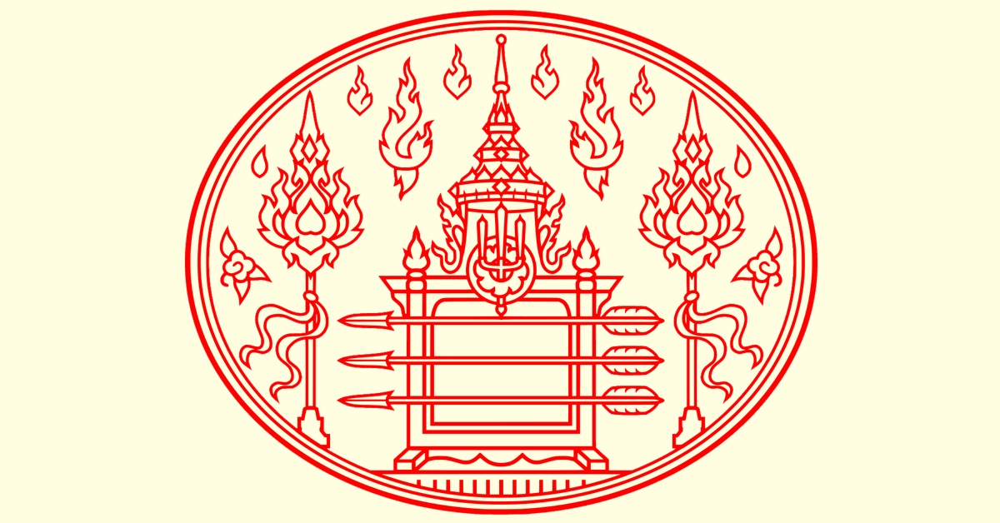

ประวัติศาสตร์ไทย สมัยราชวงศ์จักรี
รัชกาลที่ 7

พระราชประวัติ
พระบาทสมเด็จพระปกเกล้าเจ้าอยู่หัวเป็นโอรสองค์ที่ 76 ทรงเป็นพระโอรสองค์เล็กของพระบาทสมเด็จพระจุลจอมเกล้าเจ้าอยู่หัว ซึ่งทรงประสูติแด่สมเด็จพระศรีพัชรินทราบรมราชินีนารถ นับว่าเป็นพระราชโอรสองค์เล็กสุด ประสูติ เมื่อวันที่ 8 พฤศจิการยน พ.ศ. 2436 ตรงกับวันพุธ แรม 14 คํ่า เดือน 11 ปีมะเส็ง ทรงพระนามเดิมว่า " เจ้าฟ้าชายประชาธิปกศักดิเดช กรมหลวงสุโขทัยธรรมราชา "
เมื่อทรงมีพระชนมายุได้ 12 พรรษา พระองค์ได้เข้าศึกษา ในวิทยาลัยทหารบก ณ ประเทศอังกฤษจนจบและได้เสด็จกลับมารับราชการในรัชกาลที่ 6 ซึ่งเป็นพระเชษฐาธิราชของพระองค์ โดยได้รับยศเป็นนายพันโททหารบกมีตําแหน่งเป็นราชองครักษ์ และผู้บังคับการโรงเรียนนายร้อยชั้นประถม ต่อมาภายหลังได้เลื่อนตําแหน่งเป็นลําดับจนเป็นนายพันเอก มีตําแหน่งเป็นปลัดกรมเสนาธิการทหารบก ก่อนขึ้นครองราชสมบัติมีตําแหน่งเป็นผู้บัญชาการกองพลทหารราบที่ 2
การขึ้นครองราชย์
เมื่อได้เสด็จขึ้นครองราชย์แล้ว โปรดแต่งตั้งสภาอิรัฐมนตรีขึ้นให้มีหน้าที่ให้คําปรึกษาราชการและบริหารการเมือง โปรดให้ร่วมการศึกษาวิทยุคมนาคมกับต่างประเทศ พระองค์เริ่มจัดงบประมาณของประเทศขึ้นเพราะขณะนั้นได้เกิดเศรษฐกิจตกตํ่าทั่วโลก พระองค์เริ่มต้นตัดทอนงบประมาณแผ่นดินเป็นครั้งแรกเหตุการณ์นี้เป็นมูลเหตุของการปฎิวัติใน ปีพ.ศ. 2475 ประองค์ทรงตัดทอนรายจ่ายของพระองค์เอง ข้าราชการที่รับราชการที่จนล้นงานก็ให้ออกจากกระทรวงทบวงกรมต่างๆ เป็นจํานวนมาก
ศิลปวัฒนธรรมประเพณีแลการปกครอง
-การแต่งกาย พ.ศ. 2475 มาแล้ว ผู้ชายไทยนิยมนุ่งกางเกงขายาว
-การเลิกประเพณี ทรงให้เลิกพิธีศรีสัจปานกาล
-ศิลปทางด้านปฎิมากรรมชั้นเยี่ยม ได้แก่ ปฎมบรมราชานุสรณ์
-การศึกษา
พระราชทานทุนทรัพย์ส่วนพระองค์ตั้งเป็นทุนเล่าเรียนวิชาวิทยาศาสตร์คณะราษฎร
เมื่อทําการปฎิวัติเสร็จ ได้มีการประกาศแผนการศึกษาเมื่อ พ.ศ. 2475 มีการตั้งมหาวิทยาลัยธรรมศาสตร์
และการเมืองตราพระราชบัญญัติจุฬาลงกรณ์มหาวิทยาลัยใน พ.ศ. 2477
การเปลี่ยนแปลงการปกครอง
หลังจากที่พระองค์ทรงครองราชย์ได้ 7 ปี
ก็ได้มีการเปลี่ยนแปลงการปกครองไปสู่ระบบประชาธิปไตยขึ้นเมื่อวันที่
24 มิถุนายน พ.ศ. 2475 โดยบุคคลคณะหนึ่งซึ่งชื่อว่า "คณะราษฎร"
มีพระยาพหลพลพยุหเสนากับพวกเป็นผู้ก่อการยึดอํานาจการปกครองประเทศซึ่งพระองค์ก็ยอมรับรองอํานาจของคณะราษฎร
ที่จะจํากัดพระราชอภิสิทธิของพระองค์
โดยคณะราษฎรได้ให้คํามั่นสัญญาแก่ประชาชนชาวไทยว่าจะแก้ไขภาวะทางเศรษฐกิจที่ตกตํ่าให้ดีขึ้น
พระบาทสมเด็จพระปกเกล้าเจ้าอยู่หัวได้ทรงพระราชทานรัฐธรรมนูญฉบับชั่วคราวให้ เมื่อวันที่ 27 มิถุนายน พ.ศ.
2475 และได้พระราชทานรัฐธรรมนูญฉบับถาวรให้เมื่อวันที่ 10 ธันวาคม พ.ศ. 2475
พ.ศ. 2476 ได้เกิดกบฎวรเดชขึ้น รัฐบาลแห่งคณะราษฎรได้ทําการปราบปรามจนสําเร็จ
เสด็จสวรรคต
เมื่อวันที่ ๒ มีนาคม พ.ศ. ๒๔๗๗ พระบาทสมเด็จพระปกเกล้าเจ้าอยู่หัว พระองค์ได้ตัดสินพระทัย สละราชสมบัติ ต่อมาได้เสด็จสวรรคต เมื่อวันที่ ๓๐ พฤษภาคม พ.ศ. ๒๔๘๔ด้วยโรคพระหทัยพิการ ณ ประเทศอังกฤษ พระราชหัตถเลขา ที่ทรงลาออกจากราชบัลลังค์ มีความตอนหนึ่งว่า "ข้าพเจ้ามีความเต็มใจ ที่จะสละอำนาจอันเป็นของข้าพเจ้าอยู่เดิม ให้แก่ราษฎรโดยทั่วไป แต่ข้าพเจ้าไม่ ยินยอมยกอำนาจทั้งหลาย ของ ข้าพเจ้าให้ แก่ผู้ใด คณะใดโดยเฉพาะ เพื่อใช้อำนาจ โดยสิทธิขาด และโดยไม่ฟังเสียง อันแท้จริงของ ประชาราษฎร"
พระราชลัญจกรประจำรัชกาลที่ ๗
เป็นรูปพระแสงศร ๓ องค์ คือ พระแสงศรพรหมมาสตร์ พระแสงศร ประลัยวาต และพระแสงศรอัคนีวาต บนราวพาดพระแสง เหนือขึ้นไปเป็น ดวงตรามหาจักรีบรมราชวงศ์ ภายใต้ พระมหาพิชัยมงกุฎ ด้านซ้ายและขวา ตั้งบังแทรก มีลายกนกแทรกอยู่ บนพื้น ตอนบนของดวงตรา พระแสงศร ๓ องค์ นี้เป็นพระราชสัญลักษณ์ของพระบรม นามาภิไธย "ประชาธิปกศักดิเดชน์" "เดชน์" แปลว่า ลูกศร
พระราชลัญจกรประจำรัชกาลที่ ๗